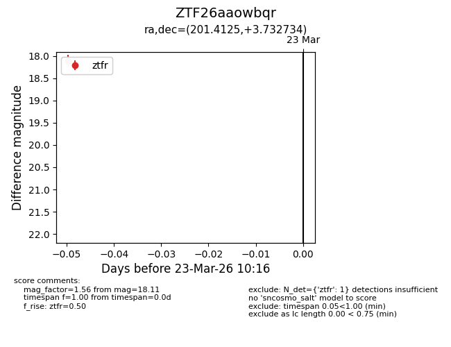
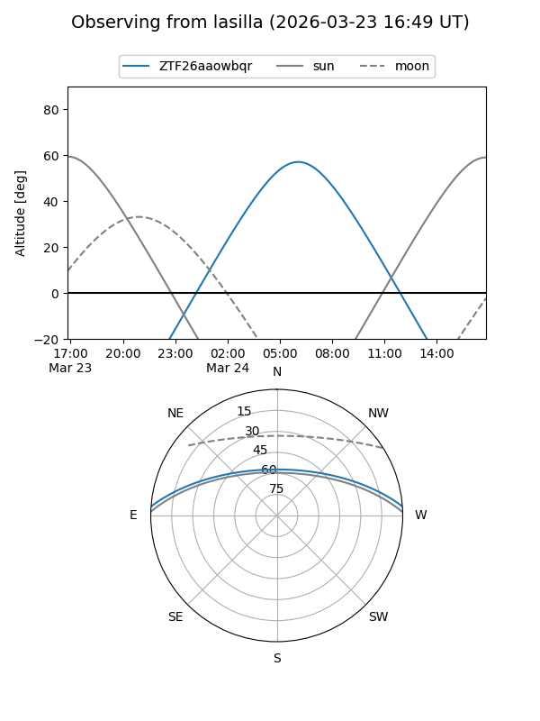
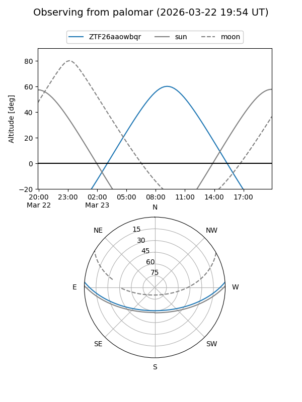

ZTF26aaowbqr
Target ZTF26aaowbqr at 2026-03-23 10:18
Aliases and brokers:
FINK: link
Lasair: link
ALeRCE: link
alt names
ZTF26aaowbqr (ztf,fink_ztf)
Coordinates:
equatorial (ra, dec) = 201.4125,+3.73273
equatorial (HMS+DMS) = 13:25:39.00,+03:43:57.84
galactic (l, b) = (323.6675,+65.21795)
Flags:
Photometry:
last ztfr=18.11
1 ztfr detections
Lightcurve

Visibility


Additional plots